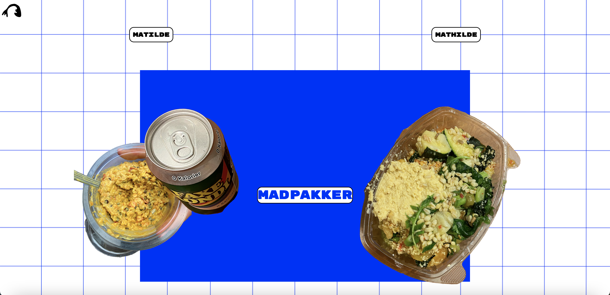

Ide
Spil ide
Min ide kom fra at jeg i vores tidligere forløb hvor vi skulle lave et emnesite og jeg havde lavet en hjemmesisde om madpakker.

Konceptet
Madpakken går ud på at lave den bedste madpakke til Ole. Man skal trykke på de rådne rugbrødsmadder inden de når madkassen. Man mister et liv hver gang man klikker på en frisk rugbrødsmad.
Stilvalg
Jeg valgte stilen Kawaii. Jeg ville gerne have runde former og glans. Designet af karakteren Ole benytter babybias i form af hans runde hoved og store øjne. Jeg har også prøvet at bruge line of action i mit design på startskærmen.